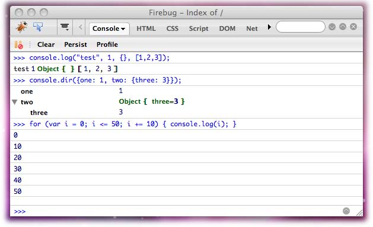

JavaScript是一门Web开发语言。起初人们只是用它来操作网页中为数不多的元素（比如图片和表单域），但是谁也没想到这门语言可以成长得如此迅速，如今，JavaScript除了适用于客户端浏览器编程外，还可以在越来越多的平台上运行。你可以用它来开发服务端程序（使用.Net或Node.js）、桌面应用程序（运行于桌面操作系统）、应用程序扩展（Firefox插件或者Photoshop扩展）、移动终端应用和纯命令行的批处理脚本。
JavaScript是一门有些独特的语言。它没有类，在很多场景中它都将函数作为“第一型”（first-class objects，中文也有译作“第一类”，以前叫“一等公民”）。起初，许多开发者认为这门语言存在很多缺陷，但最近几年情况发生了微妙的变化。有意思的是，有一些老牌语言比如Java和PHP也已经开始添加诸如闭包和匿名函数等新特性，而闭包和匿名函数则是JavaScript程序员最津津乐道的话题。
尽管JavaScript十分灵活，可以用你所熟悉的其他任何编程语言的编程风格来写JavaScript程序，但最好的方式还是拥抱它的独到之处、学习它所特有的编程模式。
模式
对“模式”的广义解释是“反复发生的事件或对象的固定用法…可以用来作为重复使用的模板或模型”（http://en.wikipedia.org/wiki/Pattern）。
在软件开发领域，模式是指常见问题的通用解决方案。模式不是简单的代码复制和粘贴，而是一种最佳实践，一种高级抽象，是解决某一类问题的范本。
学习这些模式非常重要，因为：
- 这些模式提供了经过论证的最佳实践，它可以帮助我们更好的编码，避免重复造轮子。
- 这些模式提供了高一层的抽象。一个时间段内大脑只能处理一定复杂度的逻辑，因此当你处理更繁琐棘手的问题时，使用模式可以帮你理清头绪，不会被低级的琐事阻碍大脑思考，因为所有的细枝末节都可以被归类和切分成不同的块（模式）。
- 这些模式为开发者和团队提供了沟通的渠道，团队开发者之间往往是异地协作，不会有经常面对面的沟通机会。简单的代码编写技巧和技术问题处理方式的约定（代码注释）可以使开发者之间的交流更加通畅。例如，说“即时函数”（immediate function）比说“你写好一个函数后，在函数的结束花括号的后面添加一对括号，这样能在定义函数结束后马上执行这个函数”要更容易表达和理解。
本书将着重讨论下面这三种模式：
- 设计模式（design patterns）
- 编码模式（coding patterns）
- 反模式（antipatterns）
“设计模式”最初的定义是来自于1994年出版的《设计模式：可复用面向对象软件基础》，作者是“GoF”（四人组，即四位作者）。书中列举了一些重要的设计模式，比如单例、工厂、装饰者、观察者等等。尽管设计模式是脱离某种特定的语言而存在的，但通常仍会以某种语言作为范例来讲解设计模式，这些语言多是强类型语言，比如C++和Java。有时直接将其应用于弱类型的动态语言比如JavaScript会显得毫无意义，因此适用于JavaScript的设计模式并不多。一般而言，设计模式都是基于语言的强类型特性以及基于类的继承发展而来，而对JavaScript来说则需要某种更简单的替代方案。在本书第七章将讨论基于 JavaScript实现的一些设计模式。
“编码模式”会更有趣一些，它们是JavaScript特有的模式和最佳实践，利用了这门语言独有的一些特性，比如对函数的灵活运用。JavaScript编码模式是本书所要讨论的重点内容。
本书中你会偶尔读到一点关于“反模式”的内容，顾名思义，反模式具有某些负作用甚至破坏性，书中会在讲到有关的话题时提出来。反模式并不是bug或代码错误，它只是一种处理问题的对策，但是这种对策带来的麻烦远超过他们解决的问题。在示例代码中我们会对反模式做明显的标注。
JavaScript：概念
在正式的讨论之前，应当先理清楚JavaScript中的一些重要概念，这些概念在后续章节中会经常碰到，我们先来快速过一下。
面向对象
JavaScript是一门面向对象的编程语言，这一点对于那些对JavaScript了解不多的开发者来说的确有点意外。你所能接触到的任何JavaScript代码片段都可以作为对象。只有五类原始类型不是对象，它们是数字、字符串、布尔值、null和undefined，数字、字符串和布尔值类型都有与之对应的包装对象（下一章会讲到），可以轻易的转换为对象类型，可以通过手动转换，也可以利用JavaScript解析器进行自动转换。
函数也是对象，也可以拥有属性和方法。
在任何语言中，最简单的操作莫过于定义变量。在JavaScript中定义变量的时候，其实也在和对象打交道。首先，变量自动成为一个内置对象的属性（这个内置对象被称作“活动对象”，如果是全局变量的话，就变为全局对象的属性）。其次，这个变量实际上也是“伪对象”，因为它有自己的属性（译注：原文使用了attributes，指内置的特性），用以表示变量是否可以被修改、删除或在for-in中枚举。这些特性并未在ECMAScript3中作规定，但ECMAScript5中提供了一组可以修改这些特性的方法。
那么，到底什么是对象？对象能做这么多事情，那它们一定非常特别。实际上，对象是极其简单的。对象只是很多属性的集合，一个名值对的列表（在其他语言中可能被称作关联数组），这些属性也可以是函数（函数对象），这种函数我们称为“方法”。
关于对象，我们还需要了解，我们可以随时随地修改已经创建的对象（ECMAScript5中提供了可阻止这些修改的API）。得到一个对象后，你可以给他添加、删除或更新成员。如果你关心私有成员和访问控制，我们也会在本书中讲到相关的模式。
最后一个需要注意的是，对象有两大类：
- 本地对象（Native）：由ECMAScript标准定义的对象
- 宿主对象（Host）：由宿主环境创建的对象（比如浏览器环境）
本地对象也可以被归类为内置对象（比如Array、Date）或自定义对象（var o = {}）。（译注：指本地对象包含内置对象和自定义对象。）
宿主对象包含window和所有DOM对象。如果你想知道你是否在使用宿主对象，将你的代码迁移到一个非浏览器环境中运行一下，如果正常工作，那么你的代码就只用到了本地对象。
没有类
在本书中的许多场合都会反复碰到这个概念。JavaScript中没有类，对于其他语言的编程老手来说这个观念非常新颖，需要反复的琢磨和重新学习才能理解JavaScript只能处理对象的观念。
没有类，你的代码会变得更小巧，因为你不必使用类去创建对象，看一下Java风格的对象创建：
// Java中创建对象
HelloOO hello_oo = new HelloOO();
为了创建一个简单的对象，同样一件事情重复做了三遍，这让这段代码看起来很“重”。而大多数情况下，我们想让我们的对象保持简单。
在JavaScript中，你需要一个对象，就随手创建一个空对象，然后给这个对象添加你需要的成员。你可以给它添加原始值、函数或其他对象作为这个对象属性。“空”对象并不是真正的空，对象中存在一些内置的属性，但并没有“自有属性”。在下一章里我们对此作详细讨论。
“GoF”的书中提到一条通用规则，“组合优于继承”，也就是说，如果你手头有创建这个对象所需的资源，更推荐直接将这些资源组装成你所需的对象，而不推荐通过先做分类再创建链式父子继承的方式来创建对象。在JavaScript中，这条规则非常容易遵守，因为JavaScript中没有类，而对象组装无处不在。
原型
尽管继承只是实现代码复用的其中一种方式，但在JavaScript中的确有继承（本书有专门的一章来讨论代码复用）。继承可以通过多种方式实现，最常用的就是利用原型。“原型”（prototype）是一个普通的对象，你所创建的每一个函数会自动带有prototype属性，这个属性指向一个空对象，这个空对象包含一个constructor属性，它指向你新建的函数而不是内置的Object()。除此之外，它和通过对象直接量或Object()构造函数创建的对象没什么两样。你可以给它添加新的成员，这些成员可以被其他对象继承，并当作其他对象的自有属性来使用。
我们后面会详细讨论JavaScript中的继承，现在只要记住：原型是一个对象（不是类或者其他什么特别的东西），每个函数都有一个prototype属性。
运行环境
JavaScript程序需要一个运行环境。最理所当然的运行环境就是浏览器，但这绝不是唯一的运行环境。本书所讨论的编程模式更多的和JavaScript语言核心（ECMAScript）相关，因此这些编程模式是环境无关的。除了有两个例外：
- 第八章，这一章专门讲述浏览器相关的模式
- 一些演示模式用法的实际程序
运行环境会提供自己的宿主对象，这些宿主对象并未在ECMAScript标准中定义，因此它们的行为也是不可预知的。
ECMAScript 5
JavaScript语言的核心部分（不包含DOM、BOM和其它宿主对象）是基于ECMAScript标准（简称为ES）来实现的。其中第三版是在1999年正式颁布的，目前大多数浏览器都实现了这个版本。第四版已经废弃了。第三版颁布后十年，2009年12月，第五版才正式颁布。
第五版增加了新的内置对象、方法和属性，但最重要的一项是所谓的“严格模式”（strict mode），这个模式移除了一些语言特性，让程序变得更简单更健壮。比如，对with语句的使用已经争论了很多年，现在在ECMAScript5严格模式中使用with则会报错，而在非严格模式中则是允许的。我们通过一个指令来激活严格模式，这个指令在旧版本的语言实现中被忽略。也就是说，严格模式是向下兼容的，因为在不支持严格模式的旧浏览器中也不会报错。
对于每一个作用域（包括函数作用域、全局作用域或在传给eval()的参数字符串的开始部分），你可以使用这种代码来激活严格模式：
function my() {
"use strict";
// 函数剩余的部分……
}
这样就激活了严格模式，函数的执行会被限制在语言的严格子集的范围内。对于旧浏览器来说，这句话只是一个没有赋值给任何变量的字符串，因此不会报错。
按照语言的发展计划，未来将会只保留“严格模式”。因此，现在的ES5只是一个过渡版本，它鼓励开发者使用严格模式，而非强制。
本书不会讨论ES5新增特性相关的模式，因为在本书截稿时并没有任何浏览器实现了ES5（译注：截止译稿校对时，Chrome/Firefox/IE9+已（部分）实现ES5，具体兼容情况可参考http://kangax.github.com/es5-compat-table/），但本书的示例代码有以下特点，以鼓励开发者向新标准转变：
- 确保所提供的示例代码在严格模式下不报错
- 避免使用并明确指出弃用的构造函数相关的属性和方法，比如arguments.callee
- 针对ES5中的内置模式比如Object.create()，在ES3中做同样的实现
JSLint
JavaScript是一种解释型语言，它没有静态编译时的代码检查，所以将一个仅仅因为类型错误而导致不正常的程序部署上线是完全可能的事情，而且开发者往往意识不到这些错误的存在，这时我们就需要JSLint的帮助。
JSLint（http://jslint.com ）是一个JavaScript代码质量检测工具，它的作者是 Douglas Crockford。JSLint会对代码进行扫描，并针对可能存在的问题做出警告。笔者强烈推荐你在执行代码前先通过JSlint进行检查。作者的忠告：这个工具可能“会让你不爽”，但仅仅是在开始使用它的时候不爽一下而已，你会很快会从你的错误中吸取教训，并通过它们掌握一些专业的JavaScript程序员应有的好习惯。通过JSLint的检查会让你对自己的代码更有信心，因为你不用再担心代码中某个不起眼的地方丢失了一个逗号或者有某种难以察觉的语法错误。
当开始下一章的学习时，你将发现JSLint被多次提到。本书中除了讲解反模式的示例代码外（有清楚的注释说明）、所有示例代码均通过了JSLint的检查（使用JSLint的默认设置）。
控制台工具
console对象在本书中非常常见。这个对象并不是语言的一部分，而是运行环境的一部分，目前大多数浏览器也都实现了这个对象。比如在Firefox中，它是通过Firebug扩展引入进来的。Firebug控制台工具包含UI操作界面，可以让你快速输入并测试JavaScript代码片段，也可以用它调试当前页面（图1-1）。笔者强烈推荐你使用它来辅助学习。Webkit核心的浏览器（Safari和Chrome）也提供了类似的工具，可以监控页面情况，IE8+也提供了开发者工具。
本书中大多数代码都使用console对象来输出结果，而没有使用alert()或者刷新当前页面，因为用这种方法输出结果实在太方便了。

图 1-1 使用Firebug控制台
我们经常使用log()方法，它将传入的参数在控制台输出，有时也会用到dir()，它可以将传入对象的属性枚举出来。例如：
console.log("test", 1, {}, [1,2,3]);
console.dir({one: 1, two: {three: 3}});
当你在控制台输入内容时，不必使用console.log()。为了避免混乱，有些代码片段仍然会使用console.log()进行输出，并假设所有的代码片段都使用控制台来运行：
window.name === window['name']; // true
这和下面这种用法意思一样：
console.log(window.name === window['name']);
这段代码在控制台中输出为true。